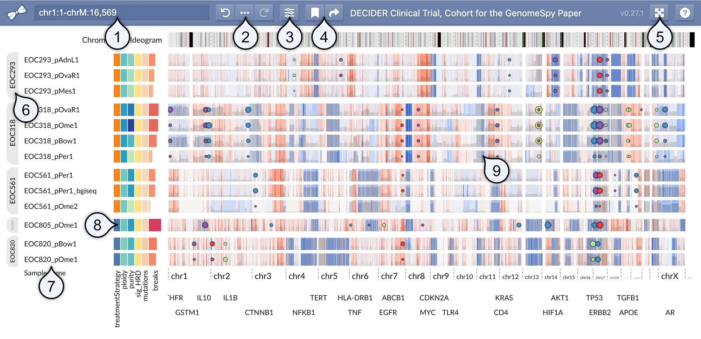
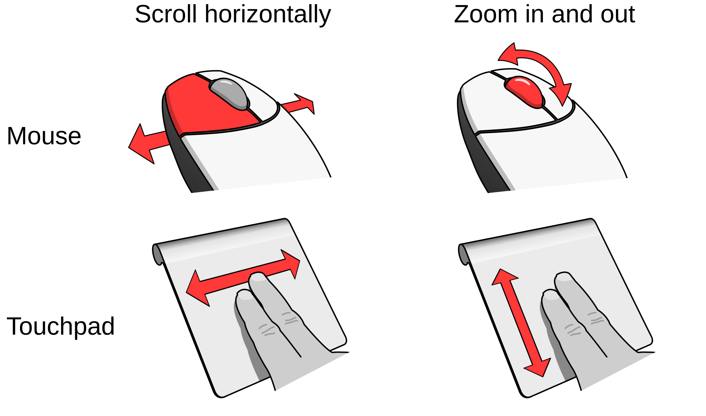
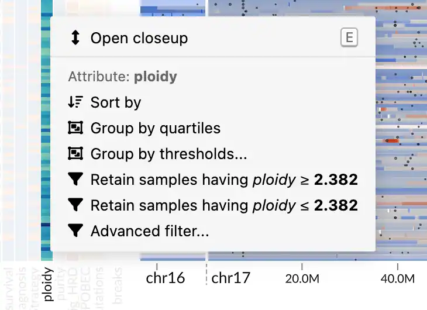
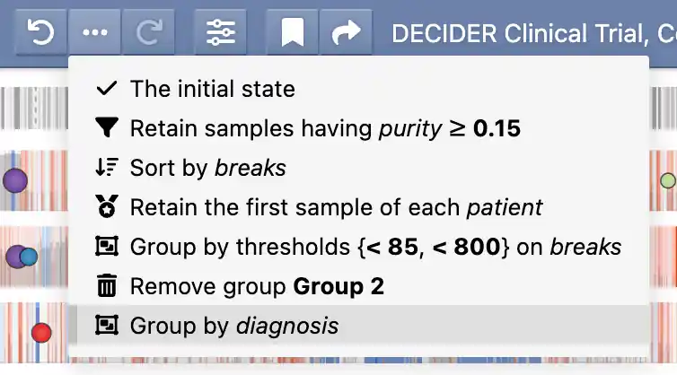
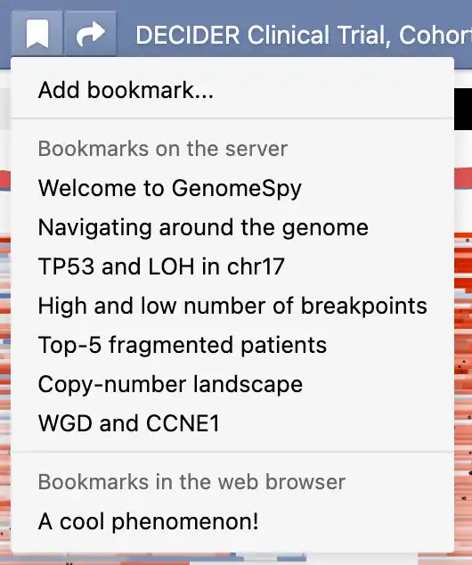

Analyzing Sample Collections¶
End-User Documentation
This page is mainly intended for end users who analyze sample collections interactively using the GenomeSpy app.
Elements of the user interface¶
Because GenomeSpy visualizations are highly customizable, the actual visualization and the available user-interface elements may differ significantly from what is shown below.

- Location / search field shows the genomic coordinates of the current viewport in a UCSC-style format. You can look up features such as gene symbols using the field. In addition, you can filter the sample collection by categorical metadata attibutes by typing a categorical value into this field.
- Undo history and provenance allows you to undo and redo actions performed on the sample collection. The provenance (:fontawesome-solid-ellipsis:) button shows all perfomed actions, allowing you to better understand how the current visualization state was constructed.
- View visibility menu allows for toggling the visibility of elements such as metadata attributes or annotation tracks.
- Bookmark menu shows a list of pre-defined bookmarks and allows you to save the visualization state as a local bookmark into your web browser. The adjacent Share (:fontawesome-solid-share:) button constructs a shareable URL, which captures the visualization state and optional notes related to the current visualization state.
- Fullscreen toggle opens the visualization in fullscreen mode.
- Group markers become visible when the sample collection has been stratified using some attribute.
- Sample names identify the samples.
- Metadata such as clinical attributes or computed variables shown as a heatmap.
- Genomic data is shown here.
Importing metadata¶
For metadata import workflows (uploading tabular metadata and importing from preconfigured sources), see Importing Metadata.
Navigation interactions¶
Navigating around the genome¶

To navigate around the genome in GenomeSpy, you can use either a mouse or a touchpad. If you're using a mouse, you can zoom the genome axis in and out using the scroll wheel. To pan the view, click with the left mouse button and start dragging.
If you're using a touchpad, you can zoom the genome axis by performing a vertical two-finger gesture. Similarly, you can pan the view by performing a horizontal gesture.
Peeking samples¶
The GenomeSpy app is designed for the exploration of large datasets containing hundreds or thousands of samples. To provide a better overview of patterns across the entire sample collection, GenomeSpy displays the samples as a bird's eye view that fits them into the available vertical space. If you discover interesting patterns or outliers in the dataset, you can peek individual samples by activating a close-up view from the context menu or by pressing the E key on the keyboard.
Once the close-up view is activated, the zooming interaction will change to vertical scrolling. However, you can still zoom in and out by holding down the Ctrl key while operating the mouse wheel or touchpad.
Manipulating the sample collection¶
Sorting, filtering, and stratifying a large sample collection can provide valuable insights into the data by helping to identify patterns and outliers. By sorting samples based on a particular attribute or filtering out irrelevant samples, you can more easily identify patterns or trends in the data that might be difficult to see otherwise. Stratifying the sample collection by grouping samples into distinct categories can also help to identify meaningful differences between groups and reveal new insights into the data.
The GenomeSpy app enables users to manipulate the sample collection using incremental actions that operate on abstract attributes, such as metadata variables or measured values at specific genomic loci. By applying a series of these stepwise actions, users can gradually shape the sample collection to their needs, enabling complex analyses. The applied actions are saved in an undo history, which also serves as provenance information for bookmarks and shared links.
An example scenario
Suppose a user has a sample collection that includes multiple tumor samples from each patient and wants to keep a single representative sample from each patient. The user defines a representative sample as having a tumor purity greater or equal to 15% and the highest copy number at the MYC locus. To form a sample collection with only the representative samples, the user performs the following actions:
- Retains samples with purity greater than or equal to 15%
- Sorts the samples in descending order by the copy number at the MYC locus
- Retains only the top sample from each patient, based on the sorting in Step 2
Following these steps, the user is left with the representative samples.
Accessing the actions¶

You can access the actions via a context menu, which appears when you right-click on a metadata attribute in the heatmap or a location in the genomic data panel.
There are two types of attributes: quantitative and categorical. Each type has a different set of supported actions. For example, quantitative attributes can be filtered using a threshold, while categorical attributes support retention or removal of selected categories.
The context menu also provides shortcuts to some actions based on the value under the cursor. For example, a context menu opened on a categorical attribute will give you actions for retaining or removing samples with the selected categorical value.
The actions¶
Sort¶
Sorts samples in ascending or descending order by the selected quantitative or ordinal attribute.
Filter by a categorical attribute¶
Retains or removes samples whose selected attribute has the value under the cursor. You can also remove samples with missing values. Use Advanced filter... to choose multiple categories to retain or remove.
Filter by a quantitative attribute¶
Retains samples by comparing the selected attribute to the value under the cursor. Shortcut actions are available for all comparison operators. You can also remove samples with missing values. Use Advanced filter... for precise thresholding with a histogram and open or closed thresholds.
Retain values based on another attribute¶
Retains all samples for category values that have at least one sample matching
a condition on another attribute. For example, after deriving a
TP53_mutation_count metadata column, you can keep all samples from patients who
have at least one sample where TP53_mutation_count > 0.
The condition can also use categorical attributes. For example, you can retain patients whose samples include a particular treatment phase. When selecting multiple categorical values, you can require either any selected value or all selected values to occur among the samples in the retained category.
Group by categorical attribute¶
Stratifies samples by the selected categorical attribute. The groups are shown to the left of the sample names, as shown above.
Group by custom categories¶
Creates groups from selected category values. Each custom group can contain one or more values from the selected attribute.
Group by quartiles¶
Stratifies samples into four groups using the selected quantitative attribute. The implementation uses the R-7 method, the default in the R programming language and Excel.
Group by thresholds¶
Stratifies samples using custom thresholds on a quantitative attribute. The dialog shows a histogram and lets you add any number of thresholds, choose which side of each threshold is open or closed, and provide custom group titles.
Retain the first sample for each category¶
Retains the first, topmost sample from each category. Sort the samples by the attribute that should determine the representative samples before using this action. For a usage example, refer to the example scenario provided in the box above.
Retain first n categories¶
Retains all samples from the first n category values in the current sample order. For example, if each patient has multiple samples, you can retain all samples from the top-5 patients based on the highest number of mutations in another attribute.
Retain values present in all groups¶
Retains samples whose selected attribute value appears in every current group. For example, suppose each patient has samples from multiple time points. First group the samples by time point. Then apply this action to the patient attribute to keep only patients that have at least one sample in every time point group. Patients missing one or more time points are removed.
Undo history and provenance¶

GenomeSpy stores the applied actions in an undo history, allowing you to easily experiment with different analyses and revert back to previous states if needed. The provenance button (:fontawesome-solid-ellipsis:) reveals a menu that shows the applied actions together with the used attributes and parameters. You can jump to different states in the undo history by clicking the menu items or the adjacent previous/next buttons.
Selecting related items in genomic tracks¶
In genomic tracks, the context menu may include a Select related items action for point selections. This lets you click one item and then select all items that share the same field value.
For example, if a clicked structural variant has clusterId = cl121, you can
select all variants with the same clusterId.
The menu shows candidate fields from the clicked datum, focusing on categorical-like fields (typically non-empty strings and booleans).
When visualizing multiple samples, the menu can offer two scopes:
- In current sample: match items in the same sample as the clicked item.
- Across all samples: match items regardless of sample.
The operation replaces the active point selection. The action is recorded in provenance and included in bookmarks, so it can be replayed like other interactive actions.
Bookmarking and sharing¶
Saving a visualization state together with provenance as a bookmark is a practical way to revisit a particular visualization later or share it with others. Bookmarks store the entire state of the visualization, including the actions taken to arrive at that state. This allows for easy and reproducible sharing of findings from the data. Moreover, bookmarks support optional Markdown-formatted notes that allow communicating essential background information and possible implications related to the discovery.
Bookmarks¶

GenomeSpy supports two types of bookmarks: pre-defined bookmarks that the visualization author may have included with the visualization and local bookmarks that you can save in your web browser. You can access both types of bookmarks from the bookmark menu (:fontawesome-solid-bookmark:). Additionally, you can remove or edit existing bookmarks through a submenu that appears when you click the ellipsis button (:fontawesome-solid-ellipsis-vertical:).
Sharing¶
The current visualization state is constantly updated to the web browser's address bar, allowing you to quickly share the state with others. However, for better context, GenomeSpy's sharing function provides the option to include a name and notes with the shared state. Additionally, recipients can conveniently import the shared link into their local GenomeSpy bookmarks. You can share the current state by clicking on the Share (:fontawesome-solid-share:) button, or share an existing bookmark by selecting the Share option from the bookmark's submenu.